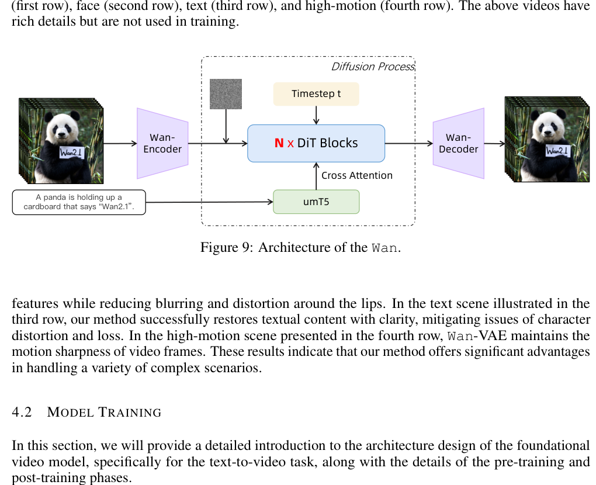
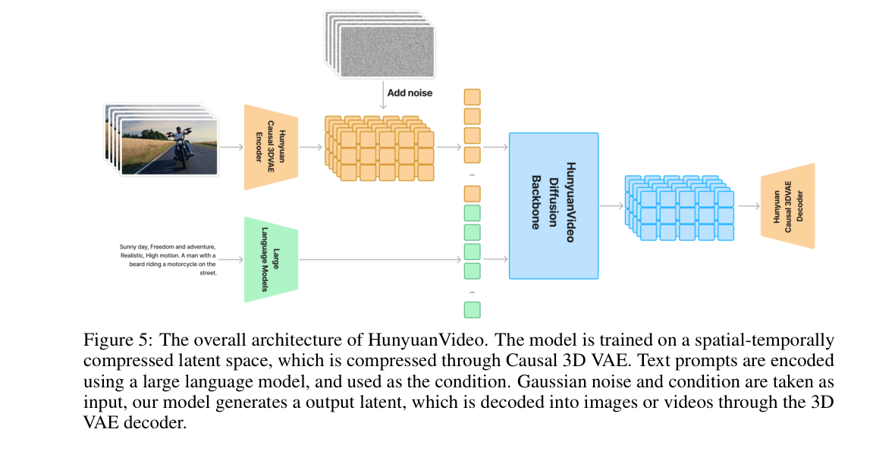
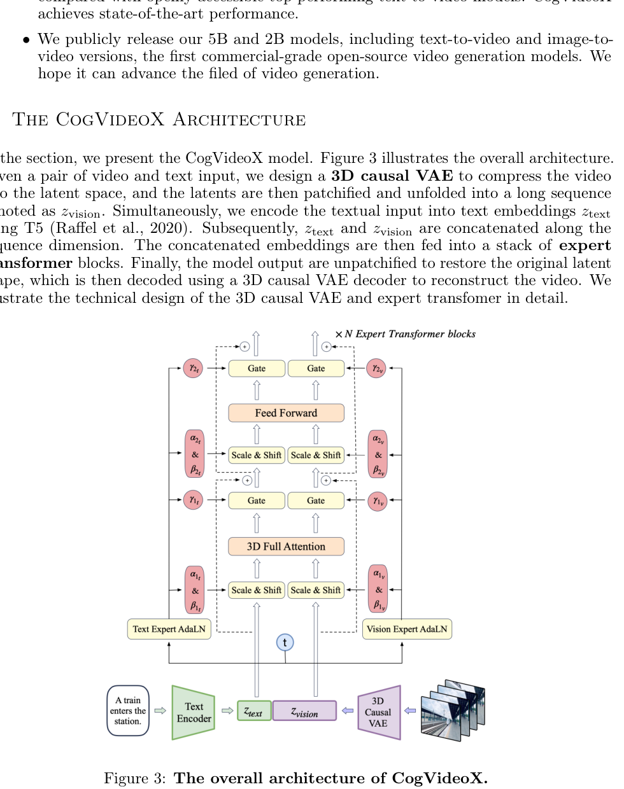

10 · Wan / Hunyuan / CogVideoX / LTX 开源视频模型对比
本文系统对比四个开源文本到视频（T2V）模型的架构、推理路径、latent shape，以及它们在不同资源档位下的现实边界。HunyuanVideo 不属于低资源优先路线，主要作为架构参考。
1. 一表纵览
| 维度 | Wan2.1-T2V-1.3B | HunyuanVideo | CogVideoX-2B | LTX-Video 2B |
|---|---|---|---|---|
| 开发者 | Wan-AI（阿里） | Tencent | THUDM（清华） | Lightricks |
| 参数量 | 1.3B | 13B+ | 2B | 2B |
| 协议 | 需接受许可 | 需申请访问 | Apache 2.0 | 需接受许可 |
| HF ID | Wan-AI/Wan2.1-T2V-1.3B |
tencent/HunyuanVideo |
THUDM/CogVideoX-2b |
Lightricks/LTX-Video |
| 权重大小 | ~5 GB | ~26 GB | ~10 GB | ~9 GB |
| 资源档位 | ⚠️ 极限（10GB，需全部 offload） | ❌ 不可行（权重即超 中等显存配置） | ✅ 可行（官方 min 4GB，中等显存配置下仍较从容） | ✅ 可行（2B distilled，最快路径） |
2. 架构对比



2.1 Latent Shape 与 VAE
| 模型 | VAE 类型 | 空间压缩 | 时间压缩 | Latent 通道 | Latent Shape (16f×256² 例) |
|---|---|---|---|---|---|
| Wan2.1 | 3D VAE（时空联合压缩） | 8× | 4× | 16 | (B,16,4,32,32) |
| HunyuanVideo | 3D VAE（独立设计） | 8× | 4× | 16 | (B,4,16,32,32) ⚠️ T 在前 |
| CogVideoX | 3D VAE（自训练） | 8× | 4× | 16 | (B,16,4,32,32) |
| LTX-Video | 2D VAE（无时间压缩） | 8× | 1×（无） | 128 | (B,128,16,32,32) |
注意 HunyuanVideo 的维度约定：HunyuanVideo 使用
(B, T, C, H, W) 而非 diffusers 默认的 (B, C, T, H, W)。这意味着在与其他模型交互或做 pipeline 集成时，需要显式 transpose(1, 2) 转换。这是视频模型中常见的容易出错的桩点。
2.2 DiT 结构
| 模型 | DiT 类型 | Attention 设计 | 位置编码 | 特殊设计 |
|---|---|---|---|---|
| Wan2.1 | 基础 DiT（image DiT 扩展） | 分离式 spatial + temporal attention | 2D sin-cos + 1D temporal embed | 用 T5-XXL 做 text encoder（额外 ~1.5B 参数） |
| HunyuanVideo | MMDiT（双流，视频扩展） | 双流 joint attention（文本 / 视频 token 分别走各自分支后在 attention 中合并） | 3D RoPE | 使用 3D RoPE 统一编码空间和时间位置 |
| CogVideoX | 改良 DiT | 分离式 spatial + temporal causal attention | 2D sin-cos + 1D temporal embed | Temporal causal mask（每帧只能看当前和过去的帧，不能看未来帧） |
| LTX-Video | DiT（distilled） | Joint spacetime attention（所有 T×S token 统一进入 full attention） | 可学习 embed（简化，蒸馏后精度下降可接受） | 蒸馏模型：4-8 步即可完成推理，无需 50 步 |
2.3 Text Encoder
| 模型 | Text Encoder | 额外显存 | 对受限显存配置的影响 |
|---|---|---|---|
| Wan2.1 | T5-XXL（~1.5B） | ~3 GB (fp16) | ⚠️ 大 text encoder 是主显存压力之一 |
| HunyuanVideo | CLIP-L + T5-XXL（双编码器） | ~5 GB | ❌ 对中档显存卡会进一步放大压力 |
| CogVideoX | T5-XXL | ~3 GB (fp16) | ✅ cpu_offload 可转移 text encoder 到 CPU |
| LTX-Video | T5-small（~300M） | ~0.6 GB | ✅ 极小 text encoder，对中等显存配置几乎无压力 |
3. 推理路径对比
3.1 通用推理流程
四个模型共享以下高层推理数据流（与图像推理的最大区别是 latent 的 T 维和 temporal attention）：
# 1. 文本编码
prompt_emb = text_encoder(prompt) # (B, L, d_text)
uncond_emb = text_encoder(negative_prompt) # CFG 用
# 2. 噪声初始化
latents = randn(B, C, T_latent, H_latent, W_latent) # ★ 5D
# 3. 迭代去噪 (t = 1 → 0)
for t in timesteps:
# 3a. 条件 / 无条件推理（分开或 batched CFG）
v_cond = dit(latents, t, prompt_emb)
v_uncond = dit(latents, t, uncond_emb)
# 3b. CFG 融合（在 vector field 层面，不在 latent 层面）
v_cfg = v_uncond + cfg_scale * (v_cond - v_uncond)
# 3c. Euler step
latents = latents + (t_next - t) * v_cfg
# 4. VAE 解码（3D → 像素）
video_frames = vae.decode(latents) # (B, 3, T_frames, H_pixel, W_pixel)
# 5. 保存
export_to_video(video_frames, "output.mp4", fps=8)
3.2 各模型的推理差异
| 差异点 | Wan2.1 | HunyuanVideo | CogVideoX | LTX-Video |
|---|---|---|---|---|
| 默认步数 | 50 | 50 | 50 | 4-8（蒸馏） |
| 默认帧数 | 81 | 129 | 49 | 121 |
| 默认分辨率 | 832×480 | 720×720 | 720×480 | 768×512 |
| CFG Scale | 5.0 | 6.0 | 6.0 | 1.0（蒸馏模型通常不需要 CFG） |
| 受限显存示例耗时 | ~10-15 min | 无法运行 | ~5-10 min | ~1-3 min |
4. 受限显存配置下的现实路径
4.1 各模型的 资源档位分析
| 模型 | 权重 VRAM | Text Enc VRAM | Latent VRAM | Attn 激活 | 总计（估计） | 资源档位结论 |
|---|---|---|---|---|---|---|
| LTX-Video 2B | ~3.7 GB | ~0.6 GB | ~0.5 GB | ~1.5 GB | ~6-8 GB | ✅ 最可能首次跑通 |
| CogVideoX-2B | ~3.7 GB | ~3.0 GB | ~0.1 GB | ~1.0 GB | ~6-9 GB | ✅ 官方 min 4GB，中等显存配置下仍较从容 |
| Wan2.1-1.3B | ~2.4 GB | ~3.0 GB | ~0.1 GB | ~1.5 GB | ~8-10 GB | ⚠️ 极限，需所有 offload + 小规格 |
| HunyuanVideo | ~26 GB | ~5.0 GB | — | — | >30 GB | ❌ 完全不可行 |
4.2 推荐执行顺序
- LTX-Video 2B distilled：2B 参数 + T5-small（~300M）+ 蒸馏 4-8 步 + 无 VAE 时间压缩。这是 在中等显存配置下最可能首次就跑通的视频模型。RTX 4060 8GB 上实测 720×480×121 帧 < 1 分钟。
- CogVideoX-2B：Apache 2.0 协议无授权障碍。官方标注 min 4GB VRAM。49 帧 720×480 在 fp16 + offload 下约 9GB。小规格 (16f×256²) 更安全。
- Wan2.1-T2V-1.3B：参数最小 (1.3B)，但 T5-XXL text encoder 额外占 ~3GB。在中等显存配置下需极限操作（全部 offload + 降级规格）。
- HunyuanVideo：不属于低资源优先路线。这里主要拿它做架构参考，并为以后在更大显存机器上的评估打底。
4.3 小规格推荐配置（在中等显存配置下较安全起跑）
| 模型 | 帧数 | 分辨率 | 步数 | dtype | offload | 预计 VRAM |
|---|---|---|---|---|---|---|
| LTX-Video | 16 | 256×256 | 8 | bf16 | model_cpu_offload | ~6 GB |
| CogVideoX | 16 | 256×256 | 8 | bf16 | model_cpu_offload | ~6 GB |
| Wan2.1 | 16 | 256×256 | 8 | bf16 | model_cpu_offload | ~8 GB |
5. 不同模型的设计哲学差异
5.1 CogVideoX — "工程精致"
- 设计哲学：在 video DiT 中保持工程化的克制——分离式 spatial + temporal attention、causal temporal mask、标准 16ch VAE。
- 适合场景：需要精细控制时间生成（causal mask 避免未来信息泄漏），且愿意为"正确性"付出 double attention 的成本。
- 显存友好度：⭐⭐⭐⭐（4GB min，中等显存配置下仍较从容）
5.2 LTX-Video — "速度优先"
- 设计哲学：通过蒸馏 + 高通道 VAE（128ch，不压缩时间）+ joint attention 实现 real-time 推理。牺牲"精细度"换"速度"。
- 适合场景：实时视频生成（如直播、交互式应用），或小显存设备。
- 显存友好度：⭐⭐⭐⭐⭐（RTX 4060 8GB 实测可行）
5.3 Wan2.1 — "小而全"
- 设计哲学：用小参数 (1.3B) + 大 text encoder (T5-XXL) 实现"小模型也能理解复杂语义"。参数打散在 DiT（小）和 text encoder（大）之间。
- 适合场景：对 prompt 质量要求高、愿意接受慢推理（T5 大但 DiT 小，总延迟偏大）。
- 显存友好度：⭐⭐⭐（极限操作，需全面降级）
5.4 HunyuanVideo — "旗舰架构"
- 设计哲学：MMDiT 双流 + 3D RoPE + 大模型参数，追求最高质量。不是为消费者 GPU 设计的。
- 适合场景：A100/H100 级计算，不适用于 受限显存场景。
- 显存友好度：⭐（不可用）
本页结论：四个开源视频模型覆盖了从"实时速度优先"（LTX-Video）到"工程精致"（CogVideoX）到"小而全"（Wan2.1）再到"旗舰架构"（HunyuanVideo）的完整频谱。若你走的是低资源优先路线，LTX-Video 2B distilled 和 CogVideoX-2B 最值得先试；Wan2.1-1.3B 还能通过更激进的 offload 和降规格去碰一碰；HunyuanVideo 则更适合放在架构学习和高配机器评估里看。
6. 和我的 diffusion_engine 的关系
和我的 diffusion_engine 的关系：在 diffusion_engine（image-only）的架构中，本章对照了四个真实 video DiT 的实现差异，对以下模块有直接启发：
| 视频概念 | diffusion_engine 模块 | 启发 |
|---|---|---|
| CogVideoX 分离式 attention | core/attention.py |
若未来扩展视频支持，应参考分离式 spatial + temporal attention（分开两个 Attention 实例，先 spatial 后 temporal）而非一个 monolithic full attention。这比 joint attention 的显存需求低。 |
| LTX-Video 蒸馏 + CFG=1.0 | core/pipeline.py |
蒸馏模型不需要 CFG（cfg_scale=1.0），意味着 pipeline 的 CFG 双 forward 可以关闭。这对受限显存推理是巨大优势（省掉 50% memory）。 |
| Wan2.1 T5-XXL text encoder | core/text_conditioning.py |
text encoder 可能是显存瓶颈（T5-XXL ~3GB）。在 ToyTextConditioner 中很小，但在 HFCachedTextConditioner 中需考虑 encoder 的 offload 策略。 |
| HunyuanVideo MMDiT 双流 | core/dit.py |
TinyDiT 的拼接式 joint attention 是 toy 简化。真实的 MMDiT 视频扩展（HunyuanVideo）使用双流架构——文本和视频 token 分别走独立的 adaLN 调制路径后在 attention 中合并。这是 T11 TinyDiT 简化清单中应记录的差异。 |
| Latent shape 约定差异 | core/pipeline.py |
pipeline 入口应显式处理 (B,C,T,H,W) 和 (B,T,C,H,W) 两种格式，避免未来接入真实模型时的 shape 错误。 |
当前状态：diffusion_engine 是 image-only 实现。本页的四个模型对比提供了"如果要扩展视频支持，应该优先参考哪个模型的架构"的明确答案：CogVideoX 的分离式 spatial+temporal attention 设计最务实，因为把视频 DiT 从 image DiT 扩展为 video DiT 时，只需在现有的 DiTBlock 中插入一个 TemporalAttention 层，spatial attention 和 FFN 可以复用。
7. 延伸阅读
- Wan2.1 论文：阿里 Wan 团队的 T2V 模型论文——1.3B/14B 两档，3D VAE 设计。
- HunyuanVideo 论文：Tencent HunyuanVideo，MMDiT 视频扩展 + 3D RoPE。
- CogVideoX 论文：THUDM 的因果视频生成模型，分离式 temporal attention + causal mask。
- LTX-Video 论文：Lightricks 的 real-time DiT 视频模型，蒸馏 + 128ch VAE。
- 学习笔记：
learning/notes/09_视频latent和spacetime_patch.md— 视频 latent shape 与 受限显存策略。 - Sora 架构：
docs/09_sora_style视频生成架构.html— spacetime patch 与 video VAE 概念。 - 实验脚本：
experiments/reference_video_inference/— T15 三个视频推理脚本与 VRAM profile 工具。